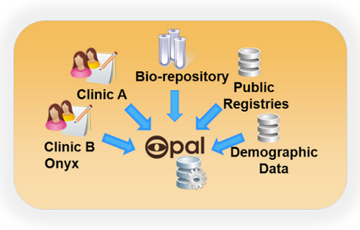
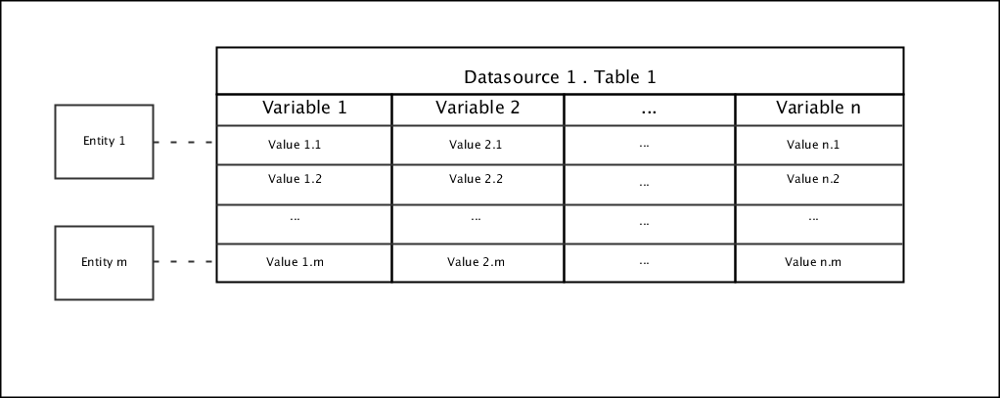
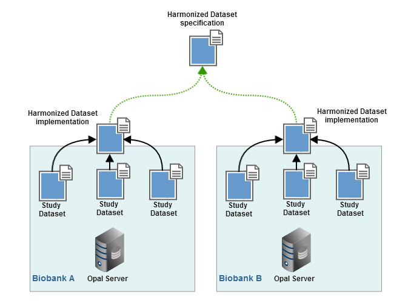
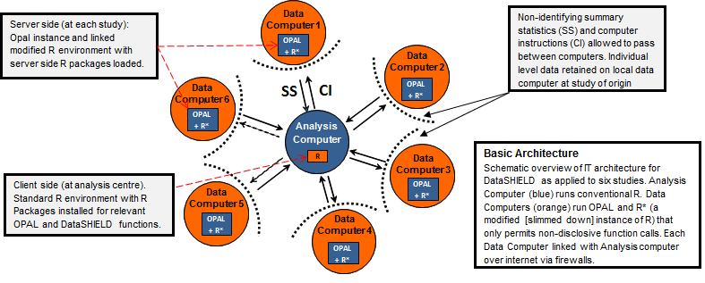
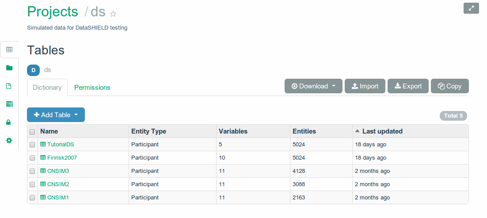
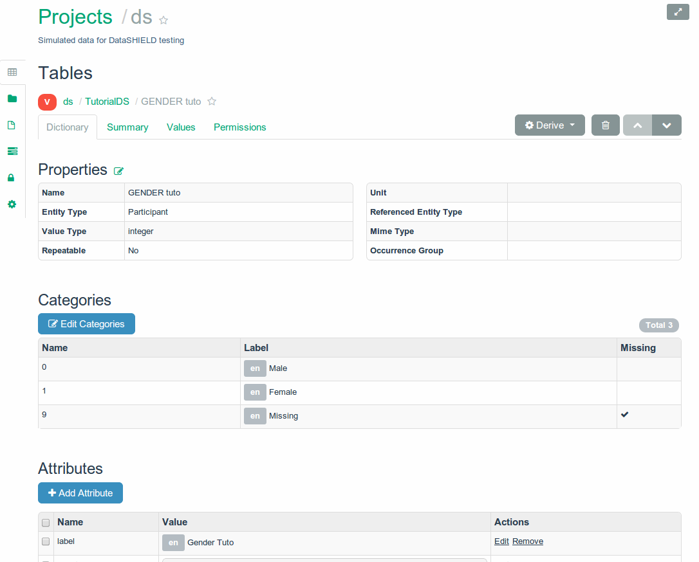
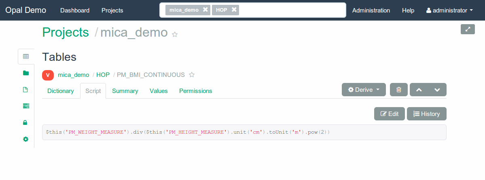
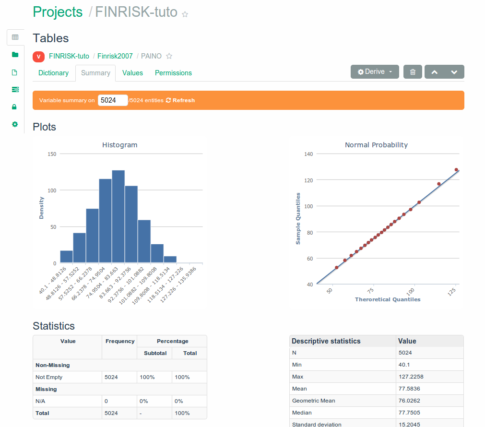
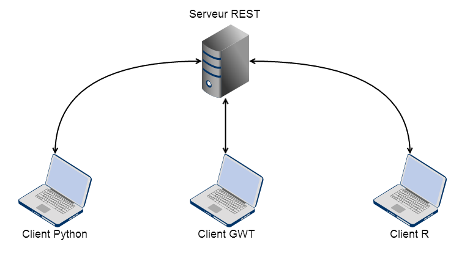

Opal
https://github.com/obiba/opal
Qu'est ce que c'est ?
Data Manager
|
|
Collecte des données
- Sources multiple
- Données hétérogènes
- Normalise le format des data et metadata
Concept et modèle
Table traditionnelle
- Colonne == variable
- Rangée == value sets pour chaque participant
- Cellule == valeur pour un participant pour une variable
Variable
- Décrit en ensemble de valeurs du même type
- A propos d'une entité (participant, instrument, etc.)
Catégorie
Décrit les valeurs possible d'une variable
Table
- Contient plusieurs variables
- Appartient à une datasource
Datasource (ou projet)
- Contient plusieurs tables
- Peut être persisté dans une base de donnée, un fichier dépendemment de la configuration de la datasource
Attribut
Ajoute de la meta information aux catégories, variables et datasources
- namespace
- name
- locale
- value
Variable dérivée
Variable dont les valeurs sont calculées depuis un script (JS)
Vue
- Table virtuelle
- Contient des variables dérivées
- Sous ensemble de une ou plusieurs tables
Relations

Confidentialité des participants

- ID internes à Opal
- ID persitées dans une DB dédiée
- Nouvelles ID pour chaque organisation qui accède aux données
Harmonisation des données
Harmonisation
DataSHIELD
Harmonisation avec Opal
- Données hébergées par les biobanques
(gestion des droits d'accés) - Format normalisé des données harmonisées
- Sommaire (statistiques) des des données harmonisées disponible en temps réel
- Analyse statistique en temps réel avec DataSHIELD
A quoi ça ressemble ?
Tables
Variable
Variable dérivée
Statistiques
Implémentation des datasources
Plain SQL
- BD existante
- Limité
- Entity-attribute-value (EAV)
- Transactions
- Implémentation complexe

- Implémentation très simple
- Meilleur gestion des binaires
- Scalable
- Mais... pas de transactions
Web Services
- Map une datasource vers un autre Opal
- Import / Export
Fichiers
Utilisé lors de l'import / export
Architecture
Serveur / Clients
Package Debian

Jetty embarqué
Avant Spring Boot ;-)
Base de données document embarquée
API REST
- JAX RS (RestEasy)
- Protocol Buffers
- Documentation de l'API (Swagger)
Sécurité
|
|
|
Spatial realm
{domain}:{uri}:{permission}:{parent-permission}/{children-permission}
TABLE_ALL permission:
opal:/datasource/datasource_1/table/table_1:ALLrest:/datasource/datasource_1/table/table_1:*:GET/*
EDIT_VARIABLES permission:
opal:/datasource/datasource_1/table/table_1:EDIT_VARIABLESrest:/datasource/datasource_1/table/table_1:*:GET
rest:/datasource/datasource_1/table/table_1/variables:GET:GET/*
// so this permission won't be granted
// rest:/datasource/datasource_1/table/table_1/valuesetsElastic Search
|
|
|
Vues et Variables dérivées
 |
 |
Essayez Opal
- Username: administrator
- Password: password